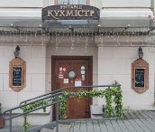

Ресторан «Кухмистр»

Домашний уют, аутентичная атмосфера, дегустационные сеты кухни и напитков ― вкусный вояж
по Беларуси и Великому княжеству Литовскому.
Услышать живую белорусскую музыку?
Больше узнать о стране и её культуре?
Купить сувениры?
Конечно, в «Кухмистр»!